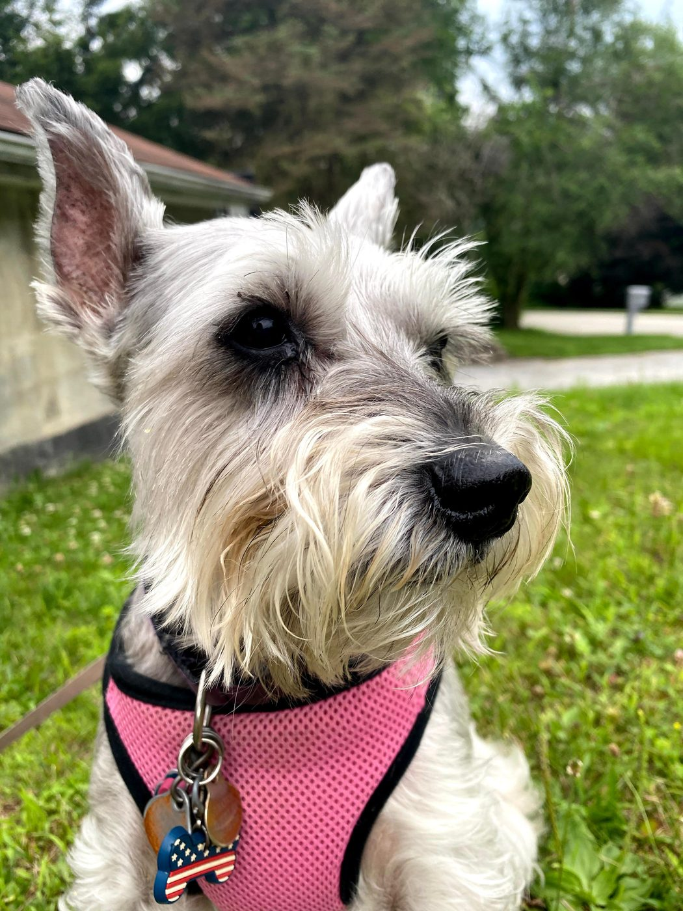
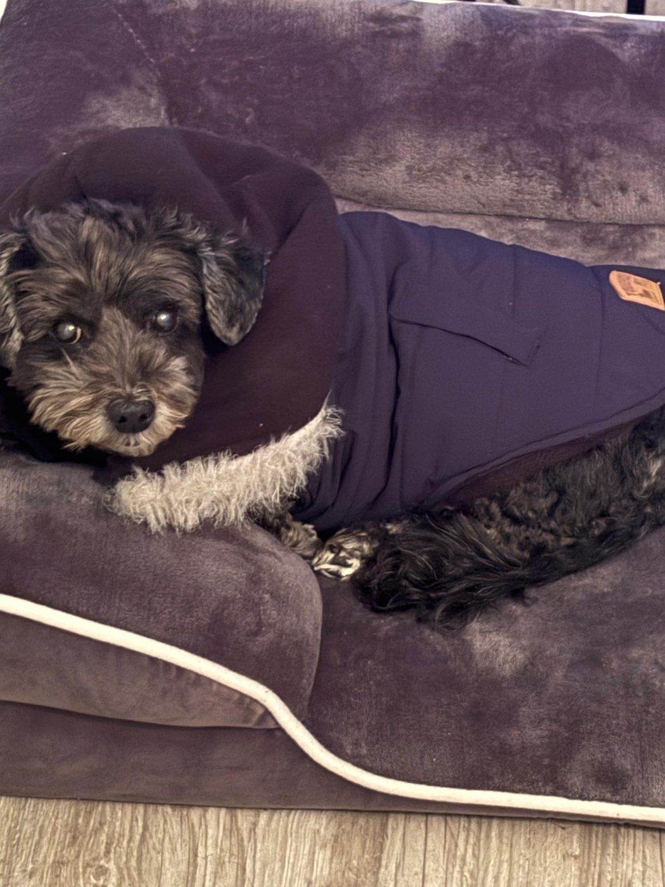
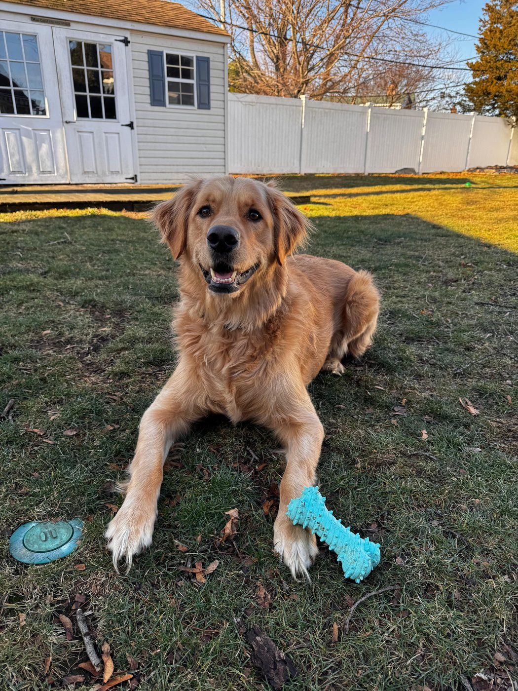
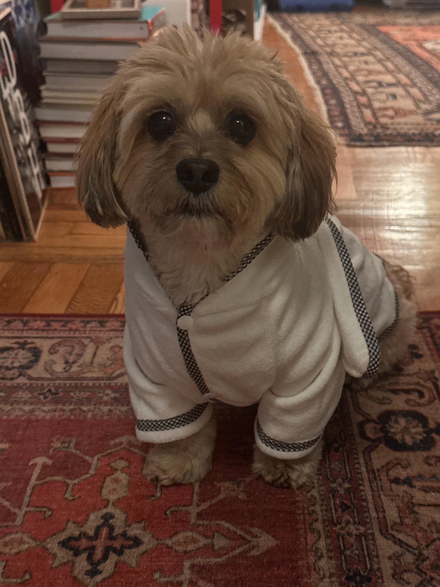
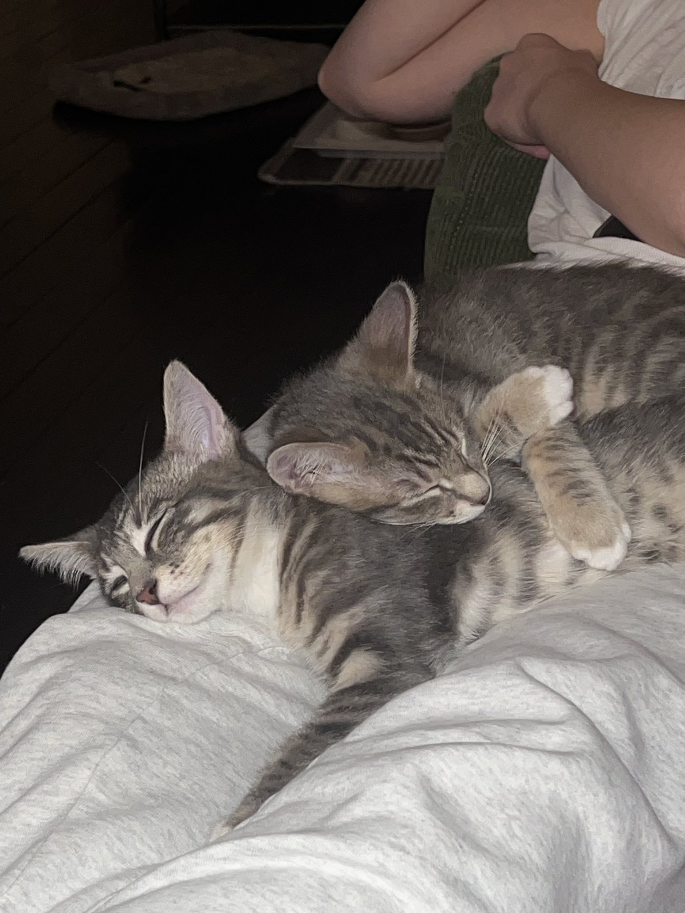

Schatzie
KarinnaTiny fashion watchdog
These are the real furry faces behind our sweetest ideas. From coat-loving little icons and backyard golden sunshine to a carrot-crunching cuddle bug and one gloriously chaotic cat duo, this gallery is the soft, silly, and very photogenic heart of GMerch.

Tiny fashion watchdog

Sweet little troublemaker

Pool-loving golden boy

Gentle little charmer

Chaotic cuddle duo
Karinna’s muse
Polished little star, dramatic bark, and a full winter wardrobe to match.
See Schatzie’s gallery →Shikira’s sidekick
Squeaky toys, cozy naps, and exactly the right amount of lovable trouble.
See Chloe’s gallery →Ryan’s sunshine boy
Golden grin, toy patrol, pool-day joy, and the happiest energy in the room.
See Jamo’s gallery →Daniel’s cuddle bug
Carrot-loving sweetheart with soft little eyes and a strong sweater game.
See Milo’s gallery →Yash’s tiny duo
One second pure zoomies, the next second a synchronized nap in perfect chaos.
See their gallery →Schatzie is a seven-year-old miniature schnauzer with tiny paws, a big bark, and a serious talent for stealing the spotlight. She is playful, cuddly, mischievous in the cutest way, and always ready for pets, toys, attention, and a long stroll with her people. She is also very clear about her taste: kibble is a no, Farmer’s Dog is a yes, and cold New York weather means coats, sweaters, and little booties are non-negotiable. With her classic schnauzer cut and sweet face that definitely hides a troublemaking streak, Schatzie is equal parts polished fashion muse, fearless watchdog, and the pup who makes home feel complete.
Chloe is an eleven-year-old poodle–Havanese mix with a sweet face, a big personality, and a very impressive ability to get into a little trouble and still be forgiven immediately. She loves long walks, favorite toys, squeaky sidekicks, and any lucky moment that includes a delicious piece of chicken. After a full day of fun, her dream ending is a cozy nap on the bed with her toy close by and the whole house wrapped around her tiny queen energy. When it comes to fashion, Chloe has opinions: she would much rather stay comfy, free, and unbothered than get dressed up, which somehow only makes her signature style even more iconic.
Jamo is a three-year-old golden retriever with a playful spirit, a heart full of love, and the kind of happy energy that makes every day feel a little brighter. He lives for backyard zoomies, toy-chasing adventures, long exploratory walks, and any chance to jump into the pool when the weather is just right. Peanut butter is easily one of his greatest joys, and belly rubs are never turned down. After all the running, swimming, and golden-retriever-level enthusiasm, Jamo’s favorite place is right beside his family, soaking up love and giving it right back with that signature sunshine smile.
Milo is a ten-year-old Dachshund–Poodle mix with a gentle soul, soft little eyes, and a quiet way of making every room feel warmer. He is the kind of pup who is happiest close to his people, tucked near your feet, keeping you company with his calm charm and loyal heart. Milo loves life’s simple pleasures most of all, especially crunchy carrots, cozy layers, and a little extra attention from the humans he adores. He may be sweet and mellow, but he fills every corner of home with affection, laughter, and that unmistakable kind of comfort only a truly beloved dog can bring.
Pollux and Castor are the resident chaotic duo of the GMerch universe: two tiny icons who can go from full-speed zoomies to dramatic synchronized naps in what feels like five seconds flat. One minute they are climbing, chasing, pouncing, and turning the house into their personal obstacle course, and the next they are sprawled out like they have never caused trouble in their lives. They are funny, fast, endlessly curious, and somehow still masters of the lazy little lounge pose. Together, they bring the perfect mix of kitten chaos, sleepy sweetness, and “who let them be this cute?” energy to the brand.